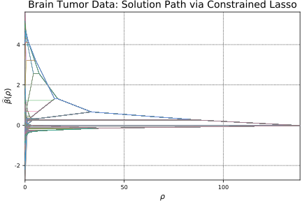

Brain Tumor Data
Section 6.2
Here we estimate a generalized lasso model (sparse fused lasso) via the constrained lasso.
# load data
y = readdlm("data/y.txt")
lambda_path = readdlm("data/lambda_path.txt")
beta_path_fused = readdlm("data/beta_path_fused.txt")[2:end, :]
# organize data
n = p = size(y, 1)
X = eye(n)
## estimate using constraiend lasso solution path algorithm
# model setup
D = [eye(p-1) zeros(p-1, 1)] - [zeros(p-1, 1) eye(p-1)]
m = size(D, 1)
# transform to constrained lasso
# calculate SVD
F = svdfact!(D, thin = false)
# extract singular values
singvals = F[:S]
# determine rank
rankD = countnz(F[:S] .> abs(F[:S][1]) * eps(F[:S][1]) * maximum(size(D)))
# extract submatrices of V and U
V1 = F[:V][:, 1:rankD]
V2 = F[:V][:, rankD+1:end]
U1 = F[:U][:, 1:rankD]
U2 = F[:U][:, rankD+1:end]
# calculate the Moore-Penrose inverse of D
Dplus = V1 * broadcast(*, U1', 1./F[:S])
# transform design matrix
XDplus = X * Dplus
# transform to "tilde" form
XV2 = X * V2
# projection onto C(XV2)
Pxv2 = (1 / dot(XV2, XV2)) * A_mul_Bt(XV2, XV2)
# orthogonal projection matrix
Mxv2 = eye(size(XV2, 1)) - Pxv2
# create "tilde" data
ỹ = vec(Mxv2 * y)
X̃ = Mxv2 * XDplus
# constrained solution path
α̂path, ρpath, = lsq_classopath(X̃, ỹ);
@show ρpath
@show α̂path[:, end]
# transform back to beta
β̂path = Base.LinAlg.BLAS.ger!(1.0, vec(V2 * ((1 / dot(XV2, XV2)) *
At_mul_B(XV2, y))), ones(size(ρpath)), (eye(size(V2, 1)) -
V2 * ((1 / dot(XV2, XV2)) * At_mul_B(XV2, X))) * Dplus * α̂path )
## plot solution path
# constrained lasso solution path
plot(ρpath, β̂path', label="", xaxis = (L"$\rho$", (minimum(ρpath),
maximum(ρpath))), yaxis = (L"$\widehat{\beta}(\rho$)"), width=0.5)
title!("Brain Tumor Data: Solution Path via Constrained Lasso")
nothing # hideProblem
Name :
Objective sense : min
Type : LO (linear optimization problem)
Constraints : 1979
Cones : 0
Scalar variables : 1979
Matrix variables : 0
Integer variables : 0
Optimizer started.
Interior-point optimizer started.
Presolve started.
Linear dependency checker started.
Linear dependency checker terminated.
Eliminator started.
Freed constraints in eliminator : 1978
Eliminator terminated.
Eliminator - tries : 1 time : 0.00
Lin. dep. - tries : 1 time : 0.00
Lin. dep. - number : 0
Presolve terminated. Time: 0.00
Interior-point optimizer terminated. Time: 0.00.
Optimizer terminated. Time: 0.02
Interior-point solution summary
Problem status : PRIMAL_AND_DUAL_FEASIBLE
Solution status : OPTIMAL
Primal. obj: 0.0000000000e+00 nrm: 0e+00 Viol. con: 0e+00 var: 0e+00
Dual. obj: 0.0000000000e+00 nrm: 1e+00 Viol. con: 0e+00 var: 0e+00
Basic solution summary
Problem status : PRIMAL_AND_DUAL_FEASIBLE
Solution status : OPTIMAL
Primal. obj: 0.0000000000e+00 nrm: 0e+00 Viol. con: 0e+00 var: 0e+00
Dual. obj: 0.0000000000e+00 nrm: 1e+00 Viol. con: 0e+00 var: 0e+00
WARNING: isnan{T <: Number}(x::AbstractArray{T}) is deprecated, use isnan.(x) instead.
Stacktrace:
[1] depwarn(::String, ::Symbol) at ./deprecated.jl:70
[2] isnan(::Array{Float64,1}) at ./deprecated.jl:57
[3] populate_solution!(::Mosek.MosekMathProgSolverInterface.MosekMathProgConicModel, ::Convex.Problem, ::Dict{UInt64,Tuple{Int64,Int64}}, ::Array{Convex.ConicConstr,1}) at /Users/juhyun-kim/.julia/v0.6/Convex/src/solution.jl:118
[4] #solve!#25(::Bool, ::Bool, ::Bool, ::Function, ::Convex.Problem) at /Users/juhyun-kim/.julia/v0.6/Convex/src/solution.jl:38
[5] #solve!#24(::Array{Any,1}, ::Function, ::Convex.Problem, ::Mosek.MosekMathProgSolverInterface.MosekSolver) at /Users/juhyun-kim/.julia/v0.6/Convex/src/solution.jl:13
[6] #find_ρmax#61(::Array{Float64,2}, ::Array{Float64,1}, ::Array{Float64,2}, ::Array{Float64,1}, ::Array{Bool,1}, ::Mosek.MosekMathProgSolverInterface.MosekSolver, ::Function, ::Array{Float64,2}, ::Array{Float64,1}) at /Users/juhyun-kim/Desktop/workspace/classo/ConstrainedLasso/src/classopath.jl:681
[7] (::ConstrainedLasso.#kw##find_ρmax)(::Array{Any,1}, ::ConstrainedLasso.#find_ρmax, ::Array{Float64,2}, ::Array{Float64,1}) at ./<missing>:0
[8] #lsq_classopath#2(::Array{Float64,2}, ::Array{Float64,1}, ::Array{Float64,2}, ::Array{Float64,1}, ::Float64, ::Array{Bool,1}, ::Mosek.MosekMathProgSolverInterface.MosekSolver, ::Function, ::Array{Float64,2}, ::Array{Float64,1}) at /Users/juhyun-kim/Desktop/workspace/classo/ConstrainedLasso/src/classopath.jl:92
[9] lsq_classopath(::Array{Float64,2}, ::Array{Float64,1}) at /Users/juhyun-kim/Desktop/workspace/classo/ConstrainedLasso/src/classopath.jl:37
[10] eval(::Module, ::Any) at ./boot.jl:235
[11] #8 at /Users/juhyun-kim/.julia/v0.6/Documenter/src/Expanders.jl:459 [inlined]
[12] cd(::Documenter.Expanders.##8#10, ::String) at ./file.jl:70
[13] withoutput(::Documenter.Expanders.##7#9{Documenter.Documents.Page}) at /Users/juhyun-kim/.julia/v0.6/Documenter/src/Utilities/Utilities.jl:587
[14] runner(::Type{Documenter.Expanders.ExampleBlocks}, ::Base.Markdown.Code, ::Documenter.Documents.Page, ::Documenter.Documents.Document) at /Users/juhyun-kim/.julia/v0.6/Documenter/src/Expanders.jl:457
[15] dispatch(::Type{Documenter.Expanders.ExpanderPipeline}, ::Base.Markdown.Code, ::Documenter.Documents.Page, ::Documenter.Documents.Document) at /Users/juhyun-kim/.julia/v0.6/Documenter/src/Selectors.jl:164
[16] expand(::Documenter.Documents.Document) at /Users/juhyun-kim/.julia/v0.6/Documenter/src/Expanders.jl:29
[17] dispatch(::Type{Documenter.Builder.DocumentPipeline}, ::Documenter.Documents.Document) at /Users/juhyun-kim/.julia/v0.6/Documenter/src/Selectors.jl:164
[18] cd(::Documenter.##2#3{Documenter.Documents.Document}, ::String) at ./file.jl:70
[19] #makedocs#1(::Bool, ::Array{Any,1}, ::Function) at /Users/juhyun-kim/.julia/v0.6/Documenter/src/Documenter.jl:198
[20] (::Documenter.#kw##makedocs)(::Array{Any,1}, ::Documenter.#makedocs) at ./<missing>:0
[21] include_from_node1(::String) at ./loading.jl:569
[22] include(::String) at ./sysimg.jl:14
[23] process_options(::Base.JLOptions) at ./client.jl:305
[24] _start() at ./client.jl:371
while loading /Users/juhyun-kim/Desktop/workspace/classo/ConstrainedLasso/docs/make.jl, in expression starting on line 5
WARNING: sqrt{T <: Number}(x::AbstractArray{T}) is deprecated, use sqrt.(x) instead.
Stacktrace:
[1] depwarn(::String, ::Symbol) at ./deprecated.jl:70
[2] sqrt(::Array{Float64,1}) at ./deprecated.jl:57
[3] #lsq_constrsparsereg#1(::Array{Float64,2}, ::Array{Float64,1}, ::Array{Float64,2}, ::Array{Float64,1}, ::Array{Float64,1}, ::Array{Bool,1}, ::Mosek.MosekMathProgSolverInterface.MosekSolver, ::Bool, ::ConstrainedLasso.#lsq_constrsparsereg, ::Array{Float64,2}, ::Array{Float64,1}, ::Float64) at /Users/juhyun-kim/Desktop/workspace/classo/ConstrainedLasso/src/constrsparsereg.jl:63
[4] (::ConstrainedLasso.#kw##lsq_constrsparsereg)(::Array{Any,1}, ::ConstrainedLasso.#lsq_constrsparsereg, ::Array{Float64,2}, ::Array{Float64,1}, ::Float64) at ./<missing>:0
[5] #lsq_classopath#2(::Array{Float64,2}, ::Array{Float64,1}, ::Array{Float64,2}, ::Array{Float64,1}, ::Float64, ::Array{Bool,1}, ::Mosek.MosekMathProgSolverInterface.MosekSolver, ::Function, ::Array{Float64,2}, ::Array{Float64,1}) at /Users/juhyun-kim/Desktop/workspace/classo/ConstrainedLasso/src/classopath.jl:96
[6] lsq_classopath(::Array{Float64,2}, ::Array{Float64,1}) at /Users/juhyun-kim/Desktop/workspace/classo/ConstrainedLasso/src/classopath.jl:37
[7] eval(::Module, ::Any) at ./boot.jl:235
[8] #8 at /Users/juhyun-kim/.julia/v0.6/Documenter/src/Expanders.jl:459 [inlined]
[9] cd(::Documenter.Expanders.##8#10, ::String) at ./file.jl:70
[10] withoutput(::Documenter.Expanders.##7#9{Documenter.Documents.Page}) at /Users/juhyun-kim/.julia/v0.6/Documenter/src/Utilities/Utilities.jl:587
[11] runner(::Type{Documenter.Expanders.ExampleBlocks}, ::Base.Markdown.Code, ::Documenter.Documents.Page, ::Documenter.Documents.Document) at /Users/juhyun-kim/.julia/v0.6/Documenter/src/Expanders.jl:457
[12] dispatch(::Type{Documenter.Expanders.ExpanderPipeline}, ::Base.Markdown.Code, ::Documenter.Documents.Page, ::Documenter.Documents.Document) at /Users/juhyun-kim/.julia/v0.6/Documenter/src/Selectors.jl:164
[13] expand(::Documenter.Documents.Document) at /Users/juhyun-kim/.julia/v0.6/Documenter/src/Expanders.jl:29
[14] dispatch(::Type{Documenter.Builder.DocumentPipeline}, ::Documenter.Documents.Document) at /Users/juhyun-kim/.julia/v0.6/Documenter/src/Selectors.jl:164
[15] cd(::Documenter.##2#3{Documenter.Documents.Document}, ::String) at ./file.jl:70
[16] #makedocs#1(::Bool, ::Array{Any,1}, ::Function) at /Users/juhyun-kim/.julia/v0.6/Documenter/src/Documenter.jl:198
[17] (::Documenter.#kw##makedocs)(::Array{Any,1}, ::Documenter.#makedocs) at ./<missing>:0
[18] include_from_node1(::String) at ./loading.jl:569
[19] include(::String) at ./sysimg.jl:14
[20] process_options(::Base.JLOptions) at ./client.jl:305
[21] _start() at ./client.jl:371
while loading /Users/juhyun-kim/Desktop/workspace/classo/ConstrainedLasso/docs/make.jl, in expression starting on line 5
WARNING: Array{T}(::Type{T}, m::Int) is deprecated, use Array{T}(m) instead.
Stacktrace:
[1] depwarn(::String, ::Symbol) at ./deprecated.jl:70
[2] Array(::Type{Convex.ConicConstr}, ::Int64) at ./deprecated.jl:57
[3] conic_form!(::Convex.SOCElemConstraint, ::Convex.UniqueConicForms) at /Users/juhyun-kim/.julia/v0.6/Convex/src/constraints/soc_constraints.jl:50
[4] conic_form!(::Convex.QolElemAtom, ::Convex.UniqueConicForms) at /Users/juhyun-kim/.julia/v0.6/Convex/src/atoms/second_order_cone/qol_elementwise.jl:41
[5] conic_form!(::Convex.MultiplyAtom, ::Convex.UniqueConicForms) at /Users/juhyun-kim/.julia/v0.6/Convex/src/atoms/affine/multiply_divide.jl:71
[6] conic_form!(::Convex.AdditionAtom, ::Convex.UniqueConicForms) at /Users/juhyun-kim/.julia/v0.6/Convex/src/atoms/affine/add_subtract.jl:108
[7] conic_form!(::Convex.EqConstraint, ::Convex.UniqueConicForms) at /Users/juhyun-kim/.julia/v0.6/Convex/src/constraints/constraints.jl:43
[8] conic_form!(::Convex.Problem, ::Convex.UniqueConicForms) at /Users/juhyun-kim/.julia/v0.6/Convex/src/problems.jl:99
[9] conic_problem(::Convex.Problem) at /Users/juhyun-kim/.julia/v0.6/Convex/src/problems.jl:124
[10] #solve!#25(::Bool, ::Bool, ::Bool, ::Function, ::Convex.Problem) at /Users/juhyun-kim/.julia/v0.6/Convex/src/solution.jl:25
[11] #solve!#24(::Array{Any,1}, ::Function, ::Convex.Problem, ::Mosek.MosekMathProgSolverInterface.MosekSolver) at /Users/juhyun-kim/.julia/v0.6/Convex/src/solution.jl:13
[12] #lsq_constrsparsereg#1(::Array{Float64,2}, ::Array{Float64,1}, ::Array{Float64,2}, ::Array{Float64,1}, ::Array{Float64,1}, ::Array{Bool,1}, ::Mosek.MosekMathProgSolverInterface.MosekSolver, ::Bool, ::ConstrainedLasso.#lsq_constrsparsereg, ::Array{Float64,2}, ::Array{Float64,1}, ::Float64) at /Users/juhyun-kim/Desktop/workspace/classo/ConstrainedLasso/src/constrsparsereg.jl:70
[13] (::ConstrainedLasso.#kw##lsq_constrsparsereg)(::Array{Any,1}, ::ConstrainedLasso.#lsq_constrsparsereg, ::Array{Float64,2}, ::Array{Float64,1}, ::Float64) at ./<missing>:0
[14] #lsq_classopath#2(::Array{Float64,2}, ::Array{Float64,1}, ::Array{Float64,2}, ::Array{Float64,1}, ::Float64, ::Array{Bool,1}, ::Mosek.MosekMathProgSolverInterface.MosekSolver, ::Function, ::Array{Float64,2}, ::Array{Float64,1}) at /Users/juhyun-kim/Desktop/workspace/classo/ConstrainedLasso/src/classopath.jl:96
[15] lsq_classopath(::Array{Float64,2}, ::Array{Float64,1}) at /Users/juhyun-kim/Desktop/workspace/classo/ConstrainedLasso/src/classopath.jl:37
[16] eval(::Module, ::Any) at ./boot.jl:235
[17] #8 at /Users/juhyun-kim/.julia/v0.6/Documenter/src/Expanders.jl:459 [inlined]
[18] cd(::Documenter.Expanders.##8#10, ::String) at ./file.jl:70
[19] withoutput(::Documenter.Expanders.##7#9{Documenter.Documents.Page}) at /Users/juhyun-kim/.julia/v0.6/Documenter/src/Utilities/Utilities.jl:587
[20] runner(::Type{Documenter.Expanders.ExampleBlocks}, ::Base.Markdown.Code, ::Documenter.Documents.Page, ::Documenter.Documents.Document) at /Users/juhyun-kim/.julia/v0.6/Documenter/src/Expanders.jl:457
[21] dispatch(::Type{Documenter.Expanders.ExpanderPipeline}, ::Base.Markdown.Code, ::Documenter.Documents.Page, ::Documenter.Documents.Document) at /Users/juhyun-kim/.julia/v0.6/Documenter/src/Selectors.jl:164
[22] expand(::Documenter.Documents.Document) at /Users/juhyun-kim/.julia/v0.6/Documenter/src/Expanders.jl:29
[23] dispatch(::Type{Documenter.Builder.DocumentPipeline}, ::Documenter.Documents.Document) at /Users/juhyun-kim/.julia/v0.6/Documenter/src/Selectors.jl:164
[24] cd(::Documenter.##2#3{Documenter.Documents.Document}, ::String) at ./file.jl:70
[25] #makedocs#1(::Bool, ::Array{Any,1}, ::Function) at /Users/juhyun-kim/.julia/v0.6/Documenter/src/Documenter.jl:198
[26] (::Documenter.#kw##makedocs)(::Array{Any,1}, ::Documenter.#makedocs) at ./<missing>:0
[27] include_from_node1(::String) at ./loading.jl:569
[28] include(::String) at ./sysimg.jl:14
[29] process_options(::Base.JLOptions) at ./client.jl:305
[30] _start() at ./client.jl:371
while loading /Users/juhyun-kim/Desktop/workspace/classo/ConstrainedLasso/docs/make.jl, in expression starting on line 5
WARNING: Array{T}(::Type{T}, m::Int) is deprecated, use Array{T}(m) instead.
Stacktrace:
[1] depwarn(::String, ::Symbol) at ./deprecated.jl:70
[2] Array(::Type{DataStructures.OrderedDict{UInt64,Tuple{Union{AbstractArray, Number},Union{AbstractArray, Number}}}}, ::Int64) at ./deprecated.jl:57
[3] conic_form!(::Convex.SOCElemConstraint, ::Convex.UniqueConicForms) at /Users/juhyun-kim/.julia/v0.6/Convex/src/constraints/soc_constraints.jl:51
[4] conic_form!(::Convex.QolElemAtom, ::Convex.UniqueConicForms) at /Users/juhyun-kim/.julia/v0.6/Convex/src/atoms/second_order_cone/qol_elementwise.jl:41
[5] conic_form!(::Convex.MultiplyAtom, ::Convex.UniqueConicForms) at /Users/juhyun-kim/.julia/v0.6/Convex/src/atoms/affine/multiply_divide.jl:71
[6] conic_form!(::Convex.AdditionAtom, ::Convex.UniqueConicForms) at /Users/juhyun-kim/.julia/v0.6/Convex/src/atoms/affine/add_subtract.jl:108
[7] conic_form!(::Convex.EqConstraint, ::Convex.UniqueConicForms) at /Users/juhyun-kim/.julia/v0.6/Convex/src/constraints/constraints.jl:43
[8] conic_form!(::Convex.Problem, ::Convex.UniqueConicForms) at /Users/juhyun-kim/.julia/v0.6/Convex/src/problems.jl:99
[9] conic_problem(::Convex.Problem) at /Users/juhyun-kim/.julia/v0.6/Convex/src/problems.jl:124
[10] #solve!#25(::Bool, ::Bool, ::Bool, ::Function, ::Convex.Problem) at /Users/juhyun-kim/.julia/v0.6/Convex/src/solution.jl:25
[11] #solve!#24(::Array{Any,1}, ::Function, ::Convex.Problem, ::Mosek.MosekMathProgSolverInterface.MosekSolver) at /Users/juhyun-kim/.julia/v0.6/Convex/src/solution.jl:13
[12] #lsq_constrsparsereg#1(::Array{Float64,2}, ::Array{Float64,1}, ::Array{Float64,2}, ::Array{Float64,1}, ::Array{Float64,1}, ::Array{Bool,1}, ::Mosek.MosekMathProgSolverInterface.MosekSolver, ::Bool, ::ConstrainedLasso.#lsq_constrsparsereg, ::Array{Float64,2}, ::Array{Float64,1}, ::Float64) at /Users/juhyun-kim/Desktop/workspace/classo/ConstrainedLasso/src/constrsparsereg.jl:70
[13] (::ConstrainedLasso.#kw##lsq_constrsparsereg)(::Array{Any,1}, ::ConstrainedLasso.#lsq_constrsparsereg, ::Array{Float64,2}, ::Array{Float64,1}, ::Float64) at ./<missing>:0
[14] #lsq_classopath#2(::Array{Float64,2}, ::Array{Float64,1}, ::Array{Float64,2}, ::Array{Float64,1}, ::Float64, ::Array{Bool,1}, ::Mosek.MosekMathProgSolverInterface.MosekSolver, ::Function, ::Array{Float64,2}, ::Array{Float64,1}) at /Users/juhyun-kim/Desktop/workspace/classo/ConstrainedLasso/src/classopath.jl:96
[15] lsq_classopath(::Array{Float64,2}, ::Array{Float64,1}) at /Users/juhyun-kim/Desktop/workspace/classo/ConstrainedLasso/src/classopath.jl:37
[16] eval(::Module, ::Any) at ./boot.jl:235
[17] #8 at /Users/juhyun-kim/.julia/v0.6/Documenter/src/Expanders.jl:459 [inlined]
[18] cd(::Documenter.Expanders.##8#10, ::String) at ./file.jl:70
[19] withoutput(::Documenter.Expanders.##7#9{Documenter.Documents.Page}) at /Users/juhyun-kim/.julia/v0.6/Documenter/src/Utilities/Utilities.jl:587
[20] runner(::Type{Documenter.Expanders.ExampleBlocks}, ::Base.Markdown.Code, ::Documenter.Documents.Page, ::Documenter.Documents.Document) at /Users/juhyun-kim/.julia/v0.6/Documenter/src/Expanders.jl:457
[21] dispatch(::Type{Documenter.Expanders.ExpanderPipeline}, ::Base.Markdown.Code, ::Documenter.Documents.Page, ::Documenter.Documents.Document) at /Users/juhyun-kim/.julia/v0.6/Documenter/src/Selectors.jl:164
[22] expand(::Documenter.Documents.Document) at /Users/juhyun-kim/.julia/v0.6/Documenter/src/Expanders.jl:29
[23] dispatch(::Type{Documenter.Builder.DocumentPipeline}, ::Documenter.Documents.Document) at /Users/juhyun-kim/.julia/v0.6/Documenter/src/Selectors.jl:164
[24] cd(::Documenter.##2#3{Documenter.Documents.Document}, ::String) at ./file.jl:70
[25] #makedocs#1(::Bool, ::Array{Any,1}, ::Function) at /Users/juhyun-kim/.julia/v0.6/Documenter/src/Documenter.jl:198
[26] (::Documenter.#kw##makedocs)(::Array{Any,1}, ::Documenter.#makedocs) at ./<missing>:0
[27] include_from_node1(::String) at ./loading.jl:569
[28] include(::String) at ./sysimg.jl:14
[29] process_options(::Base.JLOptions) at ./client.jl:305
[30] _start() at ./client.jl:371
while loading /Users/juhyun-kim/Desktop/workspace/classo/ConstrainedLasso/docs/make.jl, in expression starting on line 5
WARNING: Array{T}(::Type{T}, m::Int) is deprecated, use Array{T}(m) instead.
Stacktrace:
[1] depwarn(::String, ::Symbol) at ./deprecated.jl:70
[2] Array(::Type{DataStructures.OrderedDict{UInt64,Tuple{Union{AbstractArray, Number},Union{AbstractArray, Number}}}}, ::Int64) at ./deprecated.jl:57
[3] conic_form!(::Convex.SOCConstraint, ::Convex.UniqueConicForms) at /Users/juhyun-kim/.julia/v0.6/Convex/src/constraints/soc_constraints.jl:21
[4] conic_form!(::Convex.EucNormAtom, ::Convex.UniqueConicForms) at /Users/juhyun-kim/.julia/v0.6/Convex/src/atoms/second_order_cone/norm2.jl:47
[5] conic_form!(::Convex.MultiplyAtom, ::Convex.UniqueConicForms) at /Users/juhyun-kim/.julia/v0.6/Convex/src/atoms/affine/multiply_divide.jl:71
[6] conic_form!(::Convex.SOCElemConstraint, ::Convex.UniqueConicForms) at /Users/juhyun-kim/.julia/v0.6/Convex/src/constraints/soc_constraints.jl:53
[7] conic_form!(::Convex.QolElemAtom, ::Convex.UniqueConicForms) at /Users/juhyun-kim/.julia/v0.6/Convex/src/atoms/second_order_cone/qol_elementwise.jl:41
[8] conic_form!(::Convex.MultiplyAtom, ::Convex.UniqueConicForms) at /Users/juhyun-kim/.julia/v0.6/Convex/src/atoms/affine/multiply_divide.jl:71
[9] conic_form!(::Convex.AdditionAtom, ::Convex.UniqueConicForms) at /Users/juhyun-kim/.julia/v0.6/Convex/src/atoms/affine/add_subtract.jl:108
[10] conic_form!(::Convex.EqConstraint, ::Convex.UniqueConicForms) at /Users/juhyun-kim/.julia/v0.6/Convex/src/constraints/constraints.jl:43
[11] conic_form!(::Convex.Problem, ::Convex.UniqueConicForms) at /Users/juhyun-kim/.julia/v0.6/Convex/src/problems.jl:99
[12] conic_problem(::Convex.Problem) at /Users/juhyun-kim/.julia/v0.6/Convex/src/problems.jl:124
[13] #solve!#25(::Bool, ::Bool, ::Bool, ::Function, ::Convex.Problem) at /Users/juhyun-kim/.julia/v0.6/Convex/src/solution.jl:25
[14] #solve!#24(::Array{Any,1}, ::Function, ::Convex.Problem, ::Mosek.MosekMathProgSolverInterface.MosekSolver) at /Users/juhyun-kim/.julia/v0.6/Convex/src/solution.jl:13
[15] #lsq_constrsparsereg#1(::Array{Float64,2}, ::Array{Float64,1}, ::Array{Float64,2}, ::Array{Float64,1}, ::Array{Float64,1}, ::Array{Bool,1}, ::Mosek.MosekMathProgSolverInterface.MosekSolver, ::Bool, ::ConstrainedLasso.#lsq_constrsparsereg, ::Array{Float64,2}, ::Array{Float64,1}, ::Float64) at /Users/juhyun-kim/Desktop/workspace/classo/ConstrainedLasso/src/constrsparsereg.jl:70
[16] (::ConstrainedLasso.#kw##lsq_constrsparsereg)(::Array{Any,1}, ::ConstrainedLasso.#lsq_constrsparsereg, ::Array{Float64,2}, ::Array{Float64,1}, ::Float64) at ./<missing>:0
[17] #lsq_classopath#2(::Array{Float64,2}, ::Array{Float64,1}, ::Array{Float64,2}, ::Array{Float64,1}, ::Float64, ::Array{Bool,1}, ::Mosek.MosekMathProgSolverInterface.MosekSolver, ::Function, ::Array{Float64,2}, ::Array{Float64,1}) at /Users/juhyun-kim/Desktop/workspace/classo/ConstrainedLasso/src/classopath.jl:96
[18] lsq_classopath(::Array{Float64,2}, ::Array{Float64,1}) at /Users/juhyun-kim/Desktop/workspace/classo/ConstrainedLasso/src/classopath.jl:37
[19] eval(::Module, ::Any) at ./boot.jl:235
[20] #8 at /Users/juhyun-kim/.julia/v0.6/Documenter/src/Expanders.jl:459 [inlined]
[21] cd(::Documenter.Expanders.##8#10, ::String) at ./file.jl:70
[22] withoutput(::Documenter.Expanders.##7#9{Documenter.Documents.Page}) at /Users/juhyun-kim/.julia/v0.6/Documenter/src/Utilities/Utilities.jl:587
[23] runner(::Type{Documenter.Expanders.ExampleBlocks}, ::Base.Markdown.Code, ::Documenter.Documents.Page, ::Documenter.Documents.Document) at /Users/juhyun-kim/.julia/v0.6/Documenter/src/Expanders.jl:457
[24] dispatch(::Type{Documenter.Expanders.ExpanderPipeline}, ::Base.Markdown.Code, ::Documenter.Documents.Page, ::Documenter.Documents.Document) at /Users/juhyun-kim/.julia/v0.6/Documenter/src/Selectors.jl:164
[25] expand(::Documenter.Documents.Document) at /Users/juhyun-kim/.julia/v0.6/Documenter/src/Expanders.jl:29
[26] dispatch(::Type{Documenter.Builder.DocumentPipeline}, ::Documenter.Documents.Document) at /Users/juhyun-kim/.julia/v0.6/Documenter/src/Selectors.jl:164
[27] cd(::Documenter.##2#3{Documenter.Documents.Document}, ::String) at ./file.jl:70
[28] #makedocs#1(::Bool, ::Array{Any,1}, ::Function) at /Users/juhyun-kim/.julia/v0.6/Documenter/src/Documenter.jl:198
[29] (::Documenter.#kw##makedocs)(::Array{Any,1}, ::Documenter.#makedocs) at ./<missing>:0
[30] include_from_node1(::String) at ./loading.jl:569
[31] include(::String) at ./sysimg.jl:14
[32] process_options(::Base.JLOptions) at ./client.jl:305
[33] _start() at ./client.jl:371
while loading /Users/juhyun-kim/Desktop/workspace/classo/ConstrainedLasso/docs/make.jl, in expression starting on line 5
Problem
Name :
Objective sense : min
Type : CONIC (conic optimization problem)
Constraints : 2974
Cones : 2
Scalar variables : 2975
Matrix variables : 0
Integer variables : 0
Optimizer started.
Conic interior-point optimizer started.
Presolve started.
Linear dependency checker started.
Linear dependency checker terminated.
Eliminator started.
Freed constraints in eliminator : 989
Eliminator terminated.
Eliminator - tries : 1 time : 0.00
Lin. dep. - tries : 1 time : 0.01
Lin. dep. - number : 0
Presolve terminated. Time: 0.16
Optimizer - threads : 4
Optimizer - solved problem : the dual
Optimizer - Constraints : 991
Optimizer - Cones : 2
Optimizer - Scalar variables : 1983 conic : 994
Optimizer - Semi-definite variables: 0 scalarized : 0
Factor - setup time : 0.10 dense det. time : 0.00
Factor - ML order time : 0.02 GP order time : 0.00
Factor - nonzeros before factor : 4.91e+05 after factor : 4.91e+05
Factor - dense dim. : 0 flops : 1.29e+09
ITE PFEAS DFEAS GFEAS PRSTATUS POBJ DOBJ MU TIME
0 1.0e+00 6.8e+01 1.1e+00 0.00e+00 0.000000000e+00 -8.000000000e+00 1.0e+00 0.38
1 3.1e-02 2.1e+00 9.1e-03 -9.42e-01 -1.062188238e+03 -1.683167663e+02 3.1e-02 0.46
2 1.4e-03 9.6e-02 8.3e-04 -2.10e-02 -5.452051822e+01 1.766688794e+02 1.4e-03 0.52
3 5.1e-05 3.5e-03 2.3e-04 9.10e-01 2.410223438e+02 2.447187973e+02 5.1e-05 0.57
4 3.2e-05 2.2e-03 1.9e-04 9.96e-01 2.596885725e+02 2.620204373e+02 3.2e-05 0.61
5 2.7e-05 1.8e-03 1.7e-04 9.98e-01 2.642706884e+02 2.662319628e+02 2.7e-05 0.65
6 1.2e-05 7.9e-04 1.1e-04 9.98e-01 2.878268380e+02 2.886703274e+02 1.2e-05 0.69
7 2.0e-06 1.4e-04 4.6e-05 9.99e-01 3.052625622e+02 3.054080982e+02 2.0e-06 0.74
8 1.4e-06 9.7e-05 3.9e-05 1.00e+00 3.127534694e+02 3.128577155e+02 1.4e-06 0.78
9 8.6e-07 5.9e-05 3.0e-05 1.00e+00 3.142934229e+02 3.143569070e+02 8.6e-07 0.82
10 3.4e-07 2.3e-05 1.9e-05 1.00e+00 3.205491659e+02 3.205740998e+02 3.4e-07 0.86
11 1.3e-07 9.0e-06 1.2e-05 1.00e+00 3.220732495e+02 3.220828358e+02 1.3e-07 0.90
12 2.0e-08 1.4e-06 4.7e-06 1.00e+00 3.229847919e+02 3.229862367e+02 2.0e-08 0.94
13 1.1e-08 7.3e-07 3.4e-06 1.00e+00 3.230409393e+02 3.230417112e+02 1.1e-08 0.98
14 1.4e-09 9.5e-08 1.2e-06 1.00e+00 3.230709767e+02 3.230710761e+02 1.4e-09 1.02
15 8.2e-10 5.6e-08 9.5e-07 1.00e+00 3.230731194e+02 3.230731784e+02 8.2e-10 1.06
16 1.3e-10 8.7e-09 1.4e-10 1.00e+00 3.230745005e+02 3.230745098e+02 1.3e-10 1.09
Interior-point optimizer terminated. Time: 1.13.
Optimizer terminated. Time: 1.14
Interior-point solution summary
Problem status : PRIMAL_AND_DUAL_FEASIBLE
Solution status : OPTIMAL
Primal. obj: 3.2307450048e+02 nrm: 6e+02 Viol. con: 7e-08 var: 0e+00 cones: 0e+00
Dual. obj: 3.2307450981e+02 nrm: 2e+02 Viol. con: 0e+00 var: 6e-07 cones: 0e+00
Problem
Name :
Objective sense : min
Type : CONIC (conic optimization problem)
Constraints : 2974
Cones : 2
Scalar variables : 2975
Matrix variables : 0
Integer variables : 0
Optimizer started.
Conic interior-point optimizer started.
Presolve started.
Linear dependency checker started.
Linear dependency checker terminated.
Eliminator started.
Freed constraints in eliminator : 989
Eliminator terminated.
Eliminator - tries : 1 time : 0.00
Lin. dep. - tries : 1 time : 0.01
Lin. dep. - number : 0
Presolve terminated. Time: 0.13
Optimizer - threads : 4
Optimizer - solved problem : the dual
Optimizer - Constraints : 991
Optimizer - Cones : 2
Optimizer - Scalar variables : 1983 conic : 994
Optimizer - Semi-definite variables: 0 scalarized : 0
Factor - setup time : 0.10 dense det. time : 0.00
Factor - ML order time : 0.02 GP order time : 0.00
Factor - nonzeros before factor : 4.91e+05 after factor : 4.91e+05
Factor - dense dim. : 0 flops : 1.29e+09
ITE PFEAS DFEAS GFEAS PRSTATUS POBJ DOBJ MU TIME
0 1.0e+00 6.8e+01 1.1e+00 0.00e+00 0.000000000e+00 -8.000000000e+00 1.0e+00 0.36
1 3.1e-02 2.1e+00 9.1e-03 -9.42e-01 -1.062188238e+03 -1.683167663e+02 3.1e-02 0.43
2 1.4e-03 9.6e-02 8.3e-04 -2.10e-02 -5.452051822e+01 1.766688794e+02 1.4e-03 0.49
3 5.1e-05 3.5e-03 2.3e-04 9.10e-01 2.410223438e+02 2.447187973e+02 5.1e-05 0.54
4 3.2e-05 2.2e-03 1.9e-04 9.96e-01 2.596885725e+02 2.620204373e+02 3.2e-05 0.58
5 2.7e-05 1.8e-03 1.7e-04 9.98e-01 2.642706884e+02 2.662319628e+02 2.7e-05 0.63
6 1.2e-05 7.9e-04 1.1e-04 9.98e-01 2.878268380e+02 2.886703274e+02 1.2e-05 0.66
7 2.0e-06 1.4e-04 4.6e-05 9.99e-01 3.052625622e+02 3.054080982e+02 2.0e-06 0.71
8 1.4e-06 9.7e-05 3.9e-05 1.00e+00 3.127534694e+02 3.128577155e+02 1.4e-06 0.75
9 8.6e-07 5.9e-05 3.0e-05 1.00e+00 3.142934229e+02 3.143569070e+02 8.6e-07 0.79
10 3.4e-07 2.3e-05 1.9e-05 1.00e+00 3.205491659e+02 3.205740998e+02 3.4e-07 0.83
11 1.3e-07 9.0e-06 1.2e-05 1.00e+00 3.220732495e+02 3.220828358e+02 1.3e-07 0.87
12 2.0e-08 1.4e-06 4.7e-06 1.00e+00 3.229847919e+02 3.229862367e+02 2.0e-08 0.92
13 1.1e-08 7.3e-07 3.4e-06 1.00e+00 3.230409393e+02 3.230417112e+02 1.1e-08 0.96
14 1.4e-09 9.5e-08 1.2e-06 1.00e+00 3.230709767e+02 3.230710761e+02 1.4e-09 1.01
15 8.2e-10 5.6e-08 9.5e-07 1.00e+00 3.230731194e+02 3.230731784e+02 8.2e-10 1.05
16 1.3e-10 8.7e-09 1.4e-10 1.00e+00 3.230745005e+02 3.230745098e+02 1.3e-10 1.09
Interior-point optimizer terminated. Time: 1.13.
Optimizer terminated. Time: 1.13
Interior-point solution summary
Problem status : PRIMAL_AND_DUAL_FEASIBLE
Solution status : OPTIMAL
Primal. obj: 3.2307450048e+02 nrm: 6e+02 Viol. con: 7e-08 var: 0e+00 cones: 0e+00
Dual. obj: 3.2307450981e+02 nrm: 2e+02 Viol. con: 0e+00 var: 6e-07 cones: 0e+00
ρpath = [138.641, 135.767, 108.666, 86.7231, 38.6934, 33.6742, 33.4223, 29.0274, 16.4677, 14.8989, 13.7994, 11.5303, 7.45317, 7.10679, 6.88525, 6.79522, 6.52623, 5.38152, 4.37834, 4.22037, 3.60946, 3.52941, 3.36832, 3.32809, 3.15241, 3.09528, 2.98874, 2.62761, 2.54818, 2.39388, 2.34704, 2.20875, 2.20269, 2.17466, 2.17053, 2.13678, 2.12442, 2.10322, 2.09011, 1.94756, 1.94409, 1.93555, 1.86389, 1.84149, 1.83646, 1.75864, 1.71713, 1.70169, 1.69862, 1.66512, 1.64487, 1.6089, 1.60344, 1.59159, 1.58422, 1.55878, 1.54592, 1.54484, 1.53194, 1.52016, 1.49603, 1.49109, 1.4766, 1.44527, 1.44361, 1.40007, 1.39577, 1.38659, 1.36591, 1.3563, 1.32253, 1.30507, 1.30046, 1.29833, 1.29104, 1.29045, 1.28689, 1.27847, 1.27279, 1.26791, 1.25757, 1.24216, 1.23699, 1.23015, 1.20354, 1.19282, 1.16903, 1.16524, 1.15717, 1.14334, 1.13853, 1.12176, 1.11434, 1.08691, 1.0847, 1.04743, 1.02469, 1.00812, 0.996236, 0.97831, 0.957176, 0.956219, 0.948023, 0.924754, 0.915575, 0.912393, 0.909362, 0.897739, 0.888733, 0.886708, 0.882418, 0.880104, 0.875764, 0.872832, 0.868091, 0.856795, 0.855419, 0.855094, 0.83419, 0.833794, 0.831418, 0.829003, 0.816746, 0.79743, 0.796393, 0.796263, 0.790018, 0.783833, 0.783088, 0.772737, 0.770595, 0.767273, 0.760838, 0.758739, 0.757472, 0.755724, 0.75359, 0.752969, 0.745333, 0.744558, 0.737151, 0.733969, 0.730644, 0.729117, 0.723759, 0.713514, 0.69857, 0.697417, 0.696643, 0.694436, 0.694279, 0.689286, 0.687829, 0.687241, 0.684708, 0.67796, 0.671546, 0.666387, 0.666374, 0.663898, 0.662478, 0.65557, 0.654698, 0.652327, 0.644101, 0.639068, 0.629697, 0.629419, 0.626572, 0.624256, 0.617741, 0.617414, 0.615779, 0.609608, 0.605521, 0.603201, 0.601133, 0.596637, 0.591223, 0.590739, 0.585385, 0.584978, 0.58437, 0.578647, 0.57786, 0.573185, 0.573063, 0.572479, 0.567246, 0.565344, 0.560753, 0.560406, 0.560276, 0.554889, 0.550538, 0.549752, 0.548488, 0.548246, 0.540977, 0.538304, 0.537964, 0.537569, 0.536337, 0.535891, 0.518446, 0.518306, 0.516068, 0.515321, 0.513078, 0.511513, 0.505426, 0.503809, 0.501107, 0.496386, 0.489959, 0.483894, 0.481579, 0.481348, 0.480536, 0.47583, 0.475016, 0.474522, 0.473452, 0.467177, 0.466186, 0.46468, 0.462599, 0.461536, 0.460844, 0.459645, 0.456143, 0.455584, 0.454045, 0.453205, 0.452513, 0.452406, 0.451232, 0.449847, 0.448438, 0.448397, 0.447208, 0.446819, 0.446589, 0.445082, 0.442949, 0.441742, 0.441538, 0.439673, 0.437302, 0.43411, 0.430931, 0.430635, 0.430016, 0.429269, 0.426328, 0.425905, 0.425781, 0.424509, 0.423174, 0.422607, 0.421497, 0.417971, 0.416775, 0.41574, 0.414852, 0.413026, 0.411967, 0.408918, 0.408629, 0.405071, 0.40306, 0.402294, 0.398487, 0.39681, 0.396719, 0.39587, 0.39546, 0.395178, 0.394748, 0.393345, 0.393246, 0.392706, 0.3922, 0.391284, 0.390126, 0.387018, 0.386223, 0.383729, 0.377579, 0.376933, 0.376328, 0.375945, 0.375703, 0.374452, 0.373389, 0.372663, 0.370847, 0.369588, 0.369453, 0.368766, 0.368623, 0.368089, 0.361481, 0.36023, 0.358999, 0.358185, 0.355508, 0.354431, 0.353059, 0.350366, 0.349955, 0.349125, 0.348162, 0.347285, 0.346986, 0.346534, 0.346222, 0.343685, 0.342994, 0.342701, 0.342311, 0.338465, 0.338083, 0.336098, 0.335338, 0.332255, 0.32902, 0.328311, 0.326533, 0.326177, 0.325579, 0.322847, 0.322042, 0.321643, 0.320485, 0.319602, 0.318234, 0.318202, 0.315552, 0.314451, 0.314421, 0.314297, 0.314167, 0.313457, 0.313074, 0.313057, 0.312678, 0.310943, 0.310008, 0.309749, 0.30888, 0.30846, 0.307178, 0.307062, 0.306296, 0.303862, 0.302627, 0.302181, 0.301753, 0.300259, 0.296655, 0.296537, 0.296505, 0.295542, 0.295327, 0.293942, 0.292601, 0.291474, 0.289832, 0.287044, 0.286742, 0.286071, 0.285218, 0.284186, 0.282666, 0.281663, 0.278597, 0.278361, 0.278348, 0.276635, 0.276324, 0.273551, 0.272107, 0.271926, 0.26989, 0.26855, 0.268043, 0.266631, 0.266342, 0.265692, 0.265572, 0.264369, 0.263533, 0.262812, 0.262777, 0.262123, 0.261202, 0.260597, 0.260086, 0.257782, 0.254208, 0.254062, 0.252179, 0.252, 0.251429, 0.249818, 0.249105, 0.249059, 0.248504, 0.248019, 0.247679, 0.247434, 0.246434, 0.24609, 0.245279, 0.244457, 0.244093, 0.244072, 0.242708, 0.241562, 0.241437, 0.241028, 0.240212, 0.239252, 0.238556, 0.238208, 0.23665, 0.236404, 0.236384, 0.236264, 0.236245, 0.236095, 0.235563, 0.235272, 0.234816, 0.234487, 0.234126, 0.233992, 0.233387, 0.233097, 0.233042, 0.233026, 0.232594, 0.231226, 0.231021, 0.230659, 0.230573, 0.230389, 0.230315, 0.230307, 0.226004, 0.224701, 0.224163, 0.223795, 0.223658, 0.223423, 0.222662, 0.222561, 0.222262, 0.221416, 0.21998, 0.219925, 0.219301, 0.218028, 0.21754, 0.21731, 0.216662, 0.215304, 0.214856, 0.214423, 0.214349, 0.212441, 0.211837, 0.210956, 0.208657, 0.206255, 0.205822, 0.205707, 0.20518, 0.20508, 0.204569, 0.203475, 0.202604, 0.200999, 0.200545, 0.20036, 0.199162, 0.199013, 0.198622, 0.197553, 0.197477, 0.197097, 0.19699, 0.196701, 0.195918, 0.194825, 0.19458, 0.194241, 0.193374, 0.193285, 0.193075, 0.192989, 0.192142, 0.192063, 0.191976, 0.191116, 0.189493, 0.188811, 0.18852, 0.187904, 0.187568, 0.186854, 0.186825, 0.186481, 0.186168, 0.184289, 0.184016, 0.183191, 0.182936, 0.182227, 0.181624, 0.181435, 0.1806, 0.180404, 0.17917, 0.17872, 0.178667, 0.178046, 0.177842, 0.177696, 0.176837, 0.176387, 0.175153, 0.175107, 0.173963, 0.173401, 0.173123, 0.172622, 0.171199, 0.171021, 0.168809, 0.168503, 0.166632, 0.166615, 0.165754, 0.165676, 0.164867, 0.164795, 0.164485, 0.164409, 0.164402, 0.164398, 0.16422, 0.163618, 0.163014, 0.162492, 0.162242, 0.162205, 0.1622, 0.162151, 0.161331, 0.16121, 0.160596, 0.158676, 0.158366, 0.15691, 0.156598, 0.155643, 0.155602, 0.154821, 0.154806, 0.154482, 0.153503, 0.152147, 0.15191, 0.151383, 0.150264, 0.150043, 0.14998, 0.149824, 0.149766, 0.1489, 0.148321, 0.146056, 0.145469, 0.145404, 0.14527, 0.144722, 0.144495, 0.144456, 0.144014, 0.143211, 0.143156, 0.142222, 0.141299, 0.139455, 0.138899, 0.138844, 0.138821, 0.137593, 0.136973, 0.134745, 0.134715, 0.133549, 0.133077, 0.133017, 0.132261, 0.131932, 0.131736, 0.131338, 0.130588, 0.130431, 0.129301, 0.129222, 0.12919, 0.129163, 0.129128, 0.128955, 0.128947, 0.12894, 0.128688, 0.12778, 0.127537, 0.127526, 0.127408, 0.127295, 0.12719, 0.126962, 0.12648, 0.126278, 0.125029, 0.124211, 0.122801, 0.122712, 0.122661, 0.121929, 0.121904, 0.121128, 0.119925, 0.119698, 0.118542, 0.118014, 0.117624, 0.116937, 0.116816, 0.116294, 0.11603, 0.115508, 0.115421, 0.11532, 0.11515, 0.114234, 0.113944, 0.113784, 0.113642, 0.113317, 0.111948, 0.111305, 0.111244, 0.110475, 0.109994, 0.109842, 0.109768, 0.109722, 0.109151, 0.108587, 0.108433, 0.108215, 0.108032, 0.106658, 0.104936, 0.104814, 0.104736, 0.104489, 0.10437, 0.104352, 0.104332, 0.103965, 0.103685, 0.103325, 0.102262, 0.102139, 0.101928, 0.101782, 0.101772, 0.10129, 0.101218, 0.100923, 0.100768, 0.0999233, 0.0994294, 0.098879, 0.098661, 0.0984242, 0.0979556, 0.0977482, 0.0975211, 0.0962781, 0.095752, 0.0956757, 0.0956005, 0.0951599, 0.0941849, 0.0937043, 0.0932372, 0.0926179, 0.0922995, 0.0922185, 0.0919522, 0.0913308, 0.090974, 0.090739, 0.0893656, 0.0893502, 0.0891793, 0.0886353, 0.088569, 0.0881564, 0.08671, 0.0866666, 0.0865614, 0.0864982, 0.0851849, 0.0849552, 0.0848852, 0.0842856, 0.0841721, 0.0834629, 0.083068, 0.0825662, 0.0823845, 0.0822362, 0.081983, 0.0808262, 0.0806395, 0.0806237, 0.0803772, 0.0803707, 0.0803637, 0.080213, 0.0793765, 0.0787527, 0.0780674, 0.077827, 0.0771141, 0.0764835, 0.075997, 0.0751956, 0.0751455, 0.074967, 0.074619, 0.0740093, 0.0738868, 0.0736496, 0.0735636, 0.0733774, 0.0730634, 0.0726222, 0.0723691, 0.071863, 0.0716453, 0.0716249, 0.0705631, 0.0705008, 0.0703306, 0.0699116, 0.0695733, 0.0692914, 0.0691161, 0.068954, 0.0682258, 0.067828, 0.0668542, 0.0666103, 0.0665829, 0.0663566, 0.0660273, 0.0656747, 0.0651689, 0.0649593, 0.0646382, 0.0640028, 0.0638172, 0.0635996, 0.0626808, 0.0621247, 0.0620801, 0.0618389, 0.0613049, 0.0612163, 0.0609491, 0.0604551, 0.0602282, 0.0589928, 0.0589447, 0.058526, 0.0584948, 0.0569421, 0.05667, 0.0565919, 0.0562761, 0.0558904, 0.0554771, 0.0552969, 0.0551447, 0.0550486, 0.0547666, 0.0547, 0.0541934, 0.0541803, 0.0539933, 0.0538912, 0.0537275, 0.0535433, 0.0535378, 0.0534292, 0.0534165, 0.053136, 0.0530317, 0.0529639, 0.0528403, 0.0526785, 0.0524947, 0.0523725, 0.0516581, 0.0506987, 0.050439, 0.0495796, 0.0489876, 0.0489194, 0.0489008, 0.0488904, 0.048773, 0.0484132, 0.0480416, 0.0475913, 0.0467624, 0.0466169, 0.0456376, 0.0447483, 0.0445782, 0.0445577, 0.0443759, 0.0442563, 0.0442412, 0.0440463, 0.0439743, 0.043785, 0.0435285, 0.0430812, 0.0430208, 0.041224, 0.0412024, 0.0409601, 0.0407606, 0.0407434, 0.0402794, 0.0400212, 0.0399103, 0.0393553, 0.0389832, 0.0387764, 0.0387563, 0.038117, 0.037856, 0.036847, 0.0365887, 0.0363898, 0.0363472, 0.0360034, 0.0359521, 0.035749, 0.0355249, 0.0354655, 0.0339913, 0.0339243, 0.0336447, 0.0333414, 0.0329389, 0.0323256, 0.0315733, 0.0315146, 0.0306995, 0.0306384, 0.0301009, 0.0289766, 0.0286242, 0.0281274, 0.028081, 0.0279765, 0.0278885, 0.0278407, 0.0277659, 0.0277427, 0.0277274, 0.0275835, 0.0269885, 0.0269847, 0.025838, 0.025759, 0.0256586, 0.0254344, 0.0253346, 0.0250976, 0.0250588, 0.0250308, 0.0248694, 0.0248141, 0.0247205, 0.0242073, 0.0241779, 0.0240925, 0.0240268, 0.0239479, 0.0238898, 0.023523, 0.0232769, 0.0219423, 0.0215688, 0.0211207, 0.0210966, 0.021052, 0.0206911, 0.0204708, 0.02044, 0.0201794, 0.0201722, 0.0200586, 0.0197436, 0.0196667, 0.0194759, 0.019192, 0.0190845, 0.0190769, 0.0189458, 0.018904, 0.0188265, 0.0185781, 0.0181599, 0.0180229, 0.0175857, 0.017172, 0.016128, 0.0159229, 0.0158964, 0.0154711, 0.014308, 0.0141037, 0.0139886, 0.0139444, 0.0131477, 0.0130246, 0.0129784, 0.0125016, 0.0124604, 0.0121681, 0.0119557, 0.0117289, 0.0107842, 0.00986049, 0.00880254, 0.00869897, 0.00867662, 0.00835917, 0.00827103, 0.00775461, 0.00722691, 0.00722247, 0.00722062, 0.00553155, 0.00552401, 0.00522746, 0.00487638, 0.00419554, 0.00406548, 0.00375153, 0.00348772, 0.00336078, 0.00319116, 0.00312939, 0.0022499, 0.00129357, 0.00118782, 0.000983542, 0.000623544, 0.000246343, 0.00017132, 0.000145322, 0.0]
α̂path[:, end] = [0.486447, -0.254253, 0.135627, -0.378903, 0.193583, -0.64714, 0.515529, 0.166521, 0.348406, 0.522369, -1.82213, 1.08495, -0.768497, 0.71444, 0.0860065, -0.950342, 0.462416, 0.492974, -0.352555, 0.357295, 0.230806, -0.530278, 0.382938, -0.329781, -0.283775, -0.577412, 0.737086, -1.00097, 0.258482, -0.917934, 0.75137, 0.492076, 0.758939, -0.757902, 1.15584, -1.36386, 0.68512, 0.198731, 0.110919, -1.28815, 0.74887, 0.283329, -0.202401, -0.039597, 0.0430667, -0.230239, 0.675953, -1.55101, 1.87798, -0.475337, 0.183864, -0.177433, 2.81456, -2.59662, -1.12578, 0.309606, 0.724374, 0.228162, -0.0934896, -0.755976, 0.788526, -0.151959, -0.328203, 0.564481, -0.555215, 0.750872, -0.816698, 0.534116, -0.348123, 0.0931987, 0.175376, -1.44047, 1.21874, 0.0972961, 0.547067, -1.46074, 0.895284, -0.217085, -0.181913, 0.389192, -4.47605, 0.408976, -1.24952, 0.628807, 4.0031, 0.242477, 0.168557, 0.00809582, -5.32489, 1.55199, -0.833363, -0.0495929, 0.705383, -0.086205, 0.342199, 3.29476, 0.281355, 0.522902, 0.0309071, -1.13055, 0.943438, -0.750201, 1.19435, -0.0501601, -0.946596, 0.245389, 0.769498, 0.0554197, -0.509465, 0.496772, -0.713479, -0.0248795, -0.0281722, 0.224059, -0.214219, -0.259633, 0.0362845, 0.415173, -0.78371, 1.12389, 0.136416, -1.59664, -3.35936, 2.74889, -3.15054, 0.878045, 0.8239, -1.88432, 0.106823, 0.388234, -0.0220559, 0.229756, 4.44052, -0.151354, 1.005, -1.13212, -0.138939, 0.0278536, 0.22674, -0.0966412, 0.375522, -0.742165, 1.24878, -0.373766, 0.330195, -0.539787, -0.803859, 0.920665, -0.530165, 0.0343089, 0.190622, 0.259745, -0.158718, -0.291386, 0.084316, -0.0929916, 0.379702, -0.143691, -0.535862, 0.281252, -0.386193, 0.810885, -1.22098, 1.10647, -1.20627, 0.829168, 0.746029, -0.471145, 0.075713, -0.0535564, -0.22766, 0.408487, -0.314476, -0.388592, -0.784365, 1.56906, -0.496005, 0.0144061, 0.111321, 0.250768, -0.0500824, -0.0161652, -0.539416, 0.726426, -0.425741, -0.684588, 1.15672, -0.0631115, -0.209482, 0.438811, -0.555524, 0.313828, 0.388447, -0.572821, -0.0322209, 0.197423, -0.241267, 0.0562197, 0.181611, -0.176115, 0.752193, -0.691366, -0.313162, 0.800911, 0.302732, -0.535612, 0.0260141, 0.314393, -0.478051, 0.414669, -0.207967, -0.409925, 0.516583, -0.556057, 1.02446, -1.04246, 0.529974, 0.143215, -0.526512, 0.394794, -0.106028, -0.272313, 0.359265, -0.140967, -0.18973, -0.698214, 1.53304, -0.117017, -0.228175, -0.41728, 1.09955, -1.1789, 0.572797, -0.128196, 0.0841377, -0.685363, 0.593723, -0.288955, -0.417746, 0.612441, 0.141091, -0.653735, 0.417885, -0.315234, -0.0788038, 0.154955, -0.480789, 0.0318107, 0.256184, 0.604442, 0.269149, -0.0658426, -0.38513, -0.190285, 0.794168, -1.17763, 0.942412, 0.0710147, -0.384773, -0.284408, 0.450568, 0.107747, -0.46991, 0.172961, 0.998167, -1.17347, 0.109498, 0.243597, -0.354471, 0.343784, 0.099124, -0.233158, 0.432159, -0.279576, 0.300507, -0.977012, 0.40217, -0.100029, -0.0392982, 0.838354, -0.233597, -0.0623536, -0.239423, -0.499238, 0.421877, 0.0444168, 0.321119, -0.255525, -0.563166, 0.545101, 0.305085, 0.110254, -0.850245, -0.693938, 1.23262, -0.490575, 0.388012, 0.0389167, -0.232741, -0.0765232, -0.100843, 0.395014, -0.255227, -0.00110251, -0.0381187, 0.186974, 0.0154741, -0.76973, 0.816438, -0.292183, 0.546347, -0.695783, 0.885185, -0.254781, -0.762012, 0.741424, -0.260352, 0.21484, -0.294186, 0.275746, -0.223081, -0.0315953, -0.384091, 0.61507, 0.135621, -0.573945, 0.575984, -0.672901, 0.389618, -0.0346362, 0.37429, -0.464049, 0.54411, -0.0601666, -0.266555, 0.0766979, -0.13586, 0.242515, -0.137852, -0.930096, -0.11795, 0.730507, 0.316427, 0.196813, -1.37351, 1.33003, -0.0957214, 0.150346, 0.145209, -0.340103, -0.0775177, 0.358679, -0.587592, -0.438567, 2.19211, -1.89181, 0.408306, -0.0806184, 0.148654, 1.32953, -1.48059, -0.0477445, 0.435678, -0.101268, 0.267464, -0.815711, -0.107063, -0.0851415, 0.0823697, 0.174304, 0.0979651, 0.117854, -0.591114, 0.0371211, 0.876298, -0.290902, -0.414869, 0.608519, -0.793139, 0.547574, -0.0518432, 0.166224, 0.298875, 0.0074679, -0.64103, 0.207896, 0.147237, 0.0317577, -0.318167, -0.145166, -0.0884473, 0.220593, 0.111734, 0.23334, 0.147264, -0.781412, 0.406915, 0.48295, 0.219408, -0.591153, -0.435044, 0.515076, -0.264175, 0.0234226, 0.643654, -0.367586, 0.21873, -0.571257, -0.142527, 0.0695416, -0.0288196, 0.193817, 0.0532073, -0.0288374, 0.148803, 0.96036, -0.8178, -0.507393, 0.357299, 0.0646913, 0.300051, -1.78948, 1.61669, -0.127164, -0.124334, -0.0890803, 0.1814, -0.659747, -0.0612417, 0.996621, 0.125326, -0.657433, -0.119332, -0.121863, 0.141127, 0.212982, 0.156117, 0.667476, -0.725005, -0.257876, 0.283726, 0.246349, -0.392544, 0.133673, 0.0482011, 0.504171, -0.328935, -0.198363, -0.0781313, -0.182379, -0.0572133, 0.308558, -0.0979401, -0.247741, 0.111068, -0.0994074, 0.166957, -1.35202, 0.904991, 0.370251, 0.0232606, 0.437056, -0.618201, 0.145535, -0.0571617, 0.833628, -0.277095, 0.476131, -0.644656, -0.388682, 0.374747, -0.959785, 1.03044, -0.362886, 0.425194, 0.191166, -0.888637, 0.893006, 0.0166832, -0.619347, -0.377006, 0.393665, 0.624868, -0.224238, 0.125988, -1.7757, 1.07175, 0.240653, 0.325993, -0.443359, 0.111484, -0.27539, 0.804309, -0.372928, -0.0906286, -0.290505, 0.440799, -0.00694028, -0.621214, 0.252522, 0.443035, -0.407641, 0.45886, -0.812721, 0.614329, 0.111003, -0.0104198, -0.158492, -0.000457532, 1.87975, -1.74563, -0.233615, -0.157115, -0.267272, 0.188335, 0.220223, 0.228433, -0.828905, 0.771861, -0.0066864, -0.117442, 0.296553, -0.925532, 0.219502, 0.00147524, 0.0819213, 0.33878, 0.354052, -0.219953, -0.301094, -0.0035252, -0.287657, 0.00622363, 0.304028, -0.213596, 0.830461, -0.35441, -0.0736588, 0.627985, -0.69815, 0.328875, -0.796756, 0.607569, -0.786624, 0.776565, 0.0705219, -0.133295, 0.227793, -0.0483795, -0.340468, 0.0789043, -0.338964, -0.556661, 0.94863, -0.0497713, 0.0373156, 0.221553, 0.130795, -0.247285, 0.398793, -0.847999, 0.728774, -0.366903, 0.0762677, -0.349766, -0.793585, 1.82679, -0.155619, -0.444613, 0.0714628, 0.0934731, 0.344033, -0.900535, 0.836051, -0.386115, -0.0739522, -0.636368, 1.08753, -0.306584, 0.145489, -0.693858, 0.266118, 0.205619, -0.293439, 0.336096, 0.0485412, 0.258567, -0.808535, 0.195533, -0.301274, 0.342956, 0.0552766, 0.459836, 0.0731421, -0.539013, -0.42378, -0.0480184, 0.079882, 0.749119, -0.980713, 0.470509, 0.202624, 0.720553, -1.2473, 0.835147, 0.0409065, -0.611959, 0.115836, -0.14446, -0.0726592, 0.0805683, 0.267047, 0.0465187, -0.453732, 0.226682, -0.112254, 0.189312, -0.522019, 0.255017, 0.901862, -0.76566, -0.0759825, 0.0470108, 0.439701, -0.180592, 0.0679474, 0.460188, -0.874119, 0.514768, 0.0198486, 0.110559, -0.432804, 0.178145, -0.0351362, -0.665872, 0.94504, -0.169735, -0.32738, -0.365837, 0.945616, -0.903944, 0.928393, 0.0875348, -0.481095, 0.216651, -0.242167, 0.110993, -0.120113, 0.413282, -0.420148, 0.00242387, -0.289199, -0.261141, 1.01674, -0.578378, 0.146318, 0.0243011, -0.588065, 0.488904, -0.133127, 0.103282, -0.361713, 0.387366, 1.0067, -0.626878, -0.862234, 0.364419, 0.628498, -0.679605, -0.0761988, 0.929511, -0.568131, -0.22386, 0.595223, -0.178696, -0.648337, 1.22864, -0.447555, -0.624748, 0.567497, 0.0708958, -0.121992, -0.237615, -0.411435, 0.0376178, 0.533806, -0.122575, -0.0700334, -0.1326, -0.269669, -0.10471, 0.830868, -0.348757, -0.139111, 0.366573, -0.124125, -0.180363, 0.651947, -0.813867, 0.220916, 0.340781, -0.357331, 0.710014, -1.10204, 0.0978037, 0.39115, -0.16377, 1.09388, -1.21002, 0.0988115, -0.281959, 0.627264, 0.0554503, -0.625158, 0.64021, -0.120421, -0.215727, 0.0814516, 0.908541, -1.47828, 1.40512, -0.429642, 0.286511, -0.828408, 0.472665, -0.227249, -0.494166, 0.774532, -0.00468097, 0.167074, -1.09496, 0.185201, 0.457962, -0.360534, 0.143106, 0.00193193, -0.27848, 0.0939865, 0.0279421, -0.233521, 0.0786755, 0.157634, -0.456262, 0.51479, -0.040082, -0.141239, -0.209436, 0.287299, 0.164547, 0.024968, -0.127787, -0.0330311, -0.541023, 0.387596, -0.000614972, 0.0719396, -0.0160648, 0.0126943, -0.345763, 0.530877, -0.206615, -0.278524, 0.433977, 0.0635329, 0.0608008, 0.178323, -0.637248, -0.435045, 1.20465, -0.517574, 0.105322, 0.342496, -0.274082, -0.24764, -1.41883, 1.18241, 0.181515, 0.0900321, 0.593274, -0.612276, -0.0502315, -0.119057, -0.201811, 0.443185, 0.35327, -0.514681, 0.515185, -0.782089, 0.453809, -0.0220257, 0.211826, 0.0305165, -0.0196858, -0.303018, -0.132678, 0.325537, -0.113305, -0.263047, 0.174044, -0.310251, 0.340669, -0.391644, -0.150356, 1.06881, -0.753409, 0.288648, 0.0514828, -0.318649, 0.354206, -0.778199, 0.919169, -0.743306, 0.328784, 0.152956, 0.549394, -0.434291, -0.0894614, 0.207258, -0.240916, -0.0510192, -0.0476277, -0.169875, 0.20007, 0.363328, -0.787115, 0.0525204, -0.193151, 1.61281, -0.921652, -0.0117029, -0.411108, 0.356057, 0.261536, -0.169128, 0.160014, -0.10279, -0.563032, 0.564815, -0.195876, -0.303362, 0.100053, -0.901801, 1.00272, 0.0209761, 0.437961, 0.071869, -0.495404, -0.243823, 0.332246, 0.0348438, 0.127599, -0.66595, 0.439139, -0.255941, 0.29689, -0.227698, 0.438331, -0.0347256, 0.371001, -0.643609, -0.477632, 0.429676, 0.483872, 0.13202, -0.668954, 1.02804, -0.841871, 0.0745667, -0.0238762, -0.0493291, 0.237919, -0.34997, 0.593024, -0.243773, -0.0612875, -0.181613, 0.289406, -0.395372, 0.368804, -0.299649, 0.0720213, -0.0958746, -0.257858, 0.644748, -0.112517, -0.325264, 0.106237, 0.196098, 0.203924, 0.0377729, -0.3184, 0.361576, -0.149203, -0.379104, 0.0167118, -0.203363, 0.592537, -0.0484054, 0.000510978, -0.205367, 0.126933, 0.0672542, -0.200289, -1.0883, 0.948095, 0.113149, -0.512661, 0.371021, -0.346596, 0.420815, 0.365348, -0.111293, 0.193843, -0.176913, -0.181594, -0.065016, -0.127925, 0.0, -0.173385, 3.00255, -2.96829, 0.537668, 0.00255198, -0.028247, -0.0997538, 0.0351398, -0.229516, 0.215449, 0.168536, -0.379355, 0.0740277, -0.0165069, -0.279855, 0.419674, -0.38975, -0.286277, 0.543647, -0.107869, 0.0549636, 0.105893, -1.07825, 0.626114, 0.571566, 0.324266, -1.05691, 0.731211, 0.316698, -1.07136, 0.692013, 0.263937, -0.129883, -0.448503, 0.321413, -0.747722, 0.467948, 0.209295, 0.13592, 0.237136, -0.251261, 0.202725, -0.242837, -0.0435506, -0.309205, 0.203331, 0.0559178, -0.216611, -0.051282, 0.25979, -0.605467, 0.964183, -0.669443, 0.124214, 0.0670655, 0.254112, -0.235992, -0.241725, 0.46325, 0.0517385, -0.00892928, 0.187091, -0.34769, 0.220124, -0.774146, 1.15615, -0.155487, -0.130303, 0.410563, -0.222574, -0.357914]
## plot generalized lasso solution path (from genlasso R package)
plot(lambda_path, beta_path_fused', label="", xaxis = (L"$\lambda$", (minimum(lambda_path),
maximum(lambda_path))), yaxis = (L"$\widehat{\beta}(\lambda$)"), width=0.5)
title!("Brain Tumor Data: Generalized Lasso Solution Path")
nothing # hide
# compare estimates at common values of rho